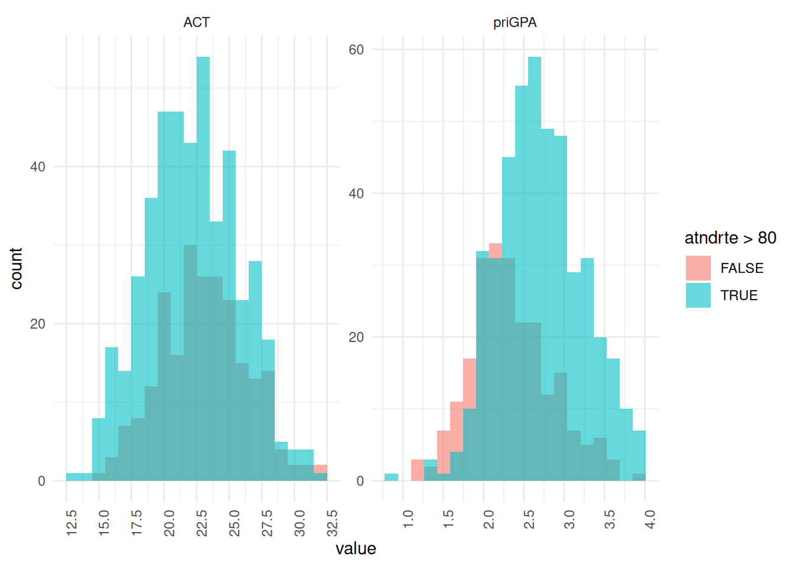

library(tidyverse)
library(wooldridge)
library(knitr)
library(modelsummary)
library(broom)3 Multiple Regression Analysis: Estimation
3.1 C1 [BWGHT]
A problem of interest to health officials (and others) is to determine the effects of smoking during pregnancy on infant health. One measure of infant health is birth weight; a birth weight that is too low can put an infant at risk for contracting various illnesses. Since factors other than cigarette smoking that affect birth weight are likely to be correlated with smoking, we should take those factors into account. For example, higher income generally results in access to better prenatal care, as well as better nutrition for the mother. An equation that recognizes this is \[bwght = \beta_0 + \beta_1 cigs + \beta_2 faminc + u\]
c1 <- bwght
kable(head(c1))| faminc | cigtax | cigprice | bwght | fatheduc | motheduc | parity | male | white | cigs | lbwght | bwghtlbs | packs | lfaminc |
|---|---|---|---|---|---|---|---|---|---|---|---|---|---|
| 13.5 | 16.5 | 122.3 | 109 | 12 | 12 | 1 | 1 | 1 | 0 | 4.691348 | 6.8125 | 0 | 2.6026897 |
| 7.5 | 16.5 | 122.3 | 133 | 6 | 12 | 2 | 1 | 0 | 0 | 4.890349 | 8.3125 | 0 | 2.0149031 |
| 0.5 | 16.5 | 122.3 | 129 | NA | 12 | 2 | 0 | 0 | 0 | 4.859812 | 8.0625 | 0 | -0.6931472 |
| 15.5 | 16.5 | 122.3 | 126 | 12 | 12 | 2 | 1 | 0 | 0 | 4.836282 | 7.8750 | 0 | 2.7408400 |
| 27.5 | 16.5 | 122.3 | 134 | 14 | 12 | 2 | 1 | 1 | 0 | 4.897840 | 8.3750 | 0 | 3.3141861 |
| 7.5 | 16.5 | 122.3 | 118 | 12 | 14 | 6 | 1 | 0 | 0 | 4.770685 | 7.3750 | 0 | 2.0149031 |
- What is the most likely sign for \(\beta_2\)?
Interpretation:
The expected sign for \(\beta_2\) is positive. Higher family income is generally associated with better access to prenatal care and improved maternal nutrition , both of which positively impact infant birth weight.
- Do you think
cigsandfamincare likely to be correlated? Explain why the correlation might be positive or negative.
Interpretation:
Yes, cigs and faminc are likely to be negatively correlated. Historically, smoking rates tend to be higher among lower-income demographics. Because family income is correlated with both the dependent variable (birth weight) and the primary independent variable (cigarettes smoked), omitting it from the model will result in omitted variable bias (OVB).
- Now, estimate the equation with and without
faminc, using the data in BWGHT. Report the results in equation form, including the sample size and R-squared. Discuss your results, focusing on whether addingfamincsubstantially changes the estimated effect ofcigsonbwght.
c1m <- lm(bwght ~ cigs, data = c1)
c1m2 <- lm(bwght ~ cigs + faminc, data = c1)
c1models <- list(
"Without Income" = c1m,
"With Income" = c1m2
)
modelsummary(
c1models,
fmt = 2,
statistic = NULL,
gof_map = c("nobs", "r.squared"),
coef_rename = c(
"(Intercept)" = "Constant",
"cigs" = "Cigarettes/Day",
"faminc" = "Family Income ($1000s)"
)
)| Without Income | With Income | |
|---|---|---|
| Constant | 119.77 | 116.97 |
| Cigarettes/Day | -0.51 | -0.46 |
| Family Income ($1000s) | 0.09 | |
| Num.Obs. | 1388 | 1388 |
| R2 | 0.023 | 0.030 |
Interpretation:
Including faminc reduces the magnitude of the smoking coefficient from approximately \(-0.514\) to \(-0.463\). This confirms that the simple regression suffered from omitted variable bias. We can decompose this bias theoretically using the formula: \[\text{Bias} = \beta_2 \times \tilde{\delta}_1\]\(\beta_2\) (Income effect on birth weight): Expected to be positive.\(\tilde{\delta}_1\) (Income-smoking correlation): Expected to be negative.Direction of Bias: Positive \(\times\) Negative = Negative Bias.Because the true partial effect of smoking (\(\beta_1\)) is negative, this negative bias pulls the simple OLS estimate further away from zero (from \(-0.463\) to \(-0.514\)), overstating the detrimental effect of smoking when income is omitted
3.2 C2 [HPRICE1]
Use the data in HPRICE1 to estimate the model \[price = \beta_0 + \beta_1sqrft + \beta_2bdrms + u\] where
priceis the house price measured in thousands of dollars.
c2 <- hprice1
kable(head(c2))| price | assess | bdrms | lotsize | sqrft | colonial | lprice | lassess | llotsize | lsqrft |
|---|---|---|---|---|---|---|---|---|---|
| 300.000 | 349.1 | 4 | 6126 | 2438 | 1 | 5.703783 | 5.855359 | 8.720297 | 7.798934 |
| 370.000 | 351.5 | 3 | 9903 | 2076 | 1 | 5.913503 | 5.862210 | 9.200593 | 7.638198 |
| 191.000 | 217.7 | 3 | 5200 | 1374 | 0 | 5.252274 | 5.383118 | 8.556414 | 7.225481 |
| 195.000 | 231.8 | 3 | 4600 | 1448 | 1 | 5.273000 | 5.445875 | 8.433811 | 7.277938 |
| 373.000 | 319.1 | 4 | 6095 | 2514 | 1 | 5.921578 | 5.765504 | 8.715224 | 7.829630 |
| 466.275 | 414.5 | 5 | 8566 | 2754 | 1 | 6.144775 | 6.027073 | 9.055556 | 7.920810 |
- Write out the results in equation form.
c2m <- lm(price ~ sqrft + bdrms, data = c2)
modelsummary(
c2m,
fmt = 2,
statistic = NULL,
gof_map = c("nobs", "r.squared"),
coef_rename = c(
"(Intercept)" = "Constant",
"sqrft" = "Size (sq. ft.)",
"bdrms" = "Number of Bedrooms"
)
)| (1) | |
|---|---|
| Constant | -19.31 |
| Size (sq. ft.) | 0.13 |
| Number of Bedrooms | 15.20 |
| Num.Obs. | 88 |
| R2 | 0.632 |
Interpretation:
\[\widehat{price} = \hat{\beta}_0 + 0.128 sqrft + 15.2 bdrms\] \(n = 88, R^2 = 0.632\)
- What is the estimated increase in price for a house with one more bedroom, holding square footage constant?
Interpretation:
Holding square footage constant (ceteris paribus), the estimated increase in price for an additional bedroom is $15,200. However, this partial effect may lack practical realism; adding a bedroom without increasing the total square footage implies partitioning existing space, which could result in smaller, cramped rooms and potentially decrease the home’s overall appeal.
- What is the estimated increase in price for a house with an additional bedroom that is 140 square feet in size? Compare this to your answer in part (ii).
base_house <- data.frame(sqrft = 140, bdrms = 1)
upgraded_house <- data.frame(sqrft = 280, bdrms = 2)
price_1 <- predict(c2m, newdata = base_house)
price_2 <- predict(c2m, newdata = upgraded_house)
cat(round(price_2 - price_1, 2))33.18Interpretation:
The estimates increase is $33,180. This represents the combined value of adding a room that is 140 square feet \[ 140 \times 0.13 + 15.2 = 33.2\]
- What percentage of the variation in price is explained by square footage and number of bedrooms?
Interpretation:
The model explains 63.2% of the variation in house prices (\(R^2 = 0.632\)). This indicates that the combination of total square footage and the number of bedrooms jointly accounts for a substantial majority of the variance in home selling prices within this sample.
- The first house in the sample has
sqrft= 2,438 andbdrms= 4. Find the predicted selling price
cat(c2m$fitted.values[1])354.6052Interpretation:
By plugging the house’s characteristics into the estimated regression equation, the predicted selling price (\(\widehat{price}\)) is $354,605.
- The actual selling price of the first house in the sample was $300,000 Find the residual for this house. Does it suggest that the buyer underpaid or overpaid for the house?
cat(c2m$residuals[1])-54.60525Interpretation:
Residual is $-54,605. Because the actual selling price is lower than the model’s predicted price (resulting in a negative residual), it suggests that the buyer underpaid relative to the expected market valuation implied by the house’s size and bedroom count.
3.3 C3 [CEOSAL2]
The file CEOSAL2 contains data on 177 chief executive officers and can be used to examine the effects of firm performance on CEO salary.
c3 <- ceosal2
kable(head(c3))| salary | age | college | grad | comten | ceoten | sales | profits | mktval | lsalary | lsales | lmktval | comtensq | ceotensq | profmarg |
|---|---|---|---|---|---|---|---|---|---|---|---|---|---|---|
| 1161 | 49 | 1 | 1 | 9 | 2 | 6200 | 966 | 23200 | 7.057037 | 8.732305 | 10.051908 | 81 | 4 | 15.580646 |
| 600 | 43 | 1 | 1 | 10 | 10 | 283 | 48 | 1100 | 6.396930 | 5.645447 | 7.003066 | 100 | 100 | 16.961130 |
| 379 | 51 | 1 | 1 | 9 | 3 | 169 | 40 | 1100 | 5.937536 | 5.129899 | 7.003066 | 81 | 9 | 23.668638 |
| 651 | 55 | 1 | 0 | 22 | 22 | 1100 | -54 | 1000 | 6.478509 | 7.003066 | 6.907755 | 484 | 484 | -4.909091 |
| 497 | 44 | 1 | 1 | 8 | 6 | 351 | 28 | 387 | 6.208590 | 5.860786 | 5.958425 | 64 | 36 | 7.977208 |
| 1067 | 64 | 1 | 1 | 7 | 7 | 19000 | 614 | 3900 | 6.972606 | 9.852194 | 8.268732 | 49 | 49 | 3.231579 |
- Estimate a model relating annual salary to firm sales and market value. Make the model of the constant elasticity variety for both independent variables.
c3m <- lm(lsalary ~ lsales + lmktval, data = c3)
modelsummary(
c3m,
fmt = 2,
statistic = NULL,
gof_map = c("nobs", "r.squared"),
coef_rename = c(
"(Intercept)" = "Constant",
"lsales" = "Log(Sales)",
"lmktval" = "Log(Market Value)"
)
)| (1) | |
|---|---|
| Constant | 4.62 |
| Log(Sales) | 0.16 |
| Log(Market Value) | 0.11 |
| Num.Obs. | 177 |
| R2 | 0.299 |
- Add
profitsto the model from part (i). Why can this variable not be included in logarithmic form? Would you say that these firm performance variables explain most of the variation in CEO salaries?
ggplot(c3, aes(x = profits)) +
geom_histogram(bins = 30)
c3m2 <- lm(lsalary ~ lsales + lmktval + profits, data = c3)
modelsummary(
c3m2,
fmt = 2,
statistic = NULL,
gof_map = c("nobs", "r.squared"),
coef_rename = c(
"(Intercept)" = "Constant",
"lsales" = "Log(Sales)",
"lmktval" = "Log(Market Value)",
"profits" = "Profits"
)
)| (1) | |
|---|---|
| Constant | 4.69 |
| Log(Sales) | 0.16 |
| Log(Market Value) | 0.10 |
| Profits | 0.00 |
| Num.Obs. | 177 |
| R2 | 0.299 |
Interpretation:
The profits variable cannot be included in logarithmic form because it contains negative values for certain firms experiencing losses. The natural logarithm is strictly undefined for non-positive numbers.Regarding the explanatory power, these firm performance variables explain approximately 30% of the variation in CEO salaries (\(R^2 \approx 0.30\)). Therefore, they do not explain most of the variation. The remaining 70% of the variance is captured by the error term, which accounts for unobserved factors such as unmeasured managerial talent, specific industry conditions, or corporate governance dynamics.
- Add the variable
ceotento the model in part (ii). What is the estimated percentage return for another year of CEO tenure, holding other factors fixed?
c3m3 <- lm(
lsalary ~ lsales + lmktval + profits + ceoten,
data = c3
)
modelsummary(
c3m3,
fmt = 2,
statistic = NULL,
gof_map = c("nobs", "r.squared"),
coef_rename = c(
"(Intercept)" = "Constant",
"lsales" = "Log(Sales)",
"lmktval" = "Log(Market Value)",
"profits" = "Profits",
"ceoten" = "Tenure"
)
)| (1) | |
|---|---|
| Constant | 4.56 |
| Log(Sales) | 0.16 |
| Log(Market Value) | 0.10 |
| Profits | 0.00 |
| Tenure | 0.01 |
| Num.Obs. | 177 |
| R2 | 0.318 |
Interpretation:
The estimated coefficient on tenure (\(\hat{\beta}_4\)) is approximately 0.01. Because the dependent variable (lsalary) is in logarithmic form and the independent variable (ceoten) is in levels (a log-level specification), we interpret this as a semi-elasticity. Holding firm performance variables constant (ceteris paribus), one additional year of CEO tenure is associated with an approximate 1% increase in salary.
- Find the sample correlation coefficient between the variables
log(mktval)andprofits. Are these variables highly correlated? What does this say about the OLS estimators?
c3 |>
summarise(
Correlation = cor(lmktval, profits)
) |>
round(2) Correlation
1 0.78Interpretation:
The sample correlation coefficient between log(mktval) and profits is 0.78. This strong positive linear relationship indicates a high degree of multicollinearity between the two explanatory variables.Regarding the OLS estimators, this multicollinearity does not violate OLS assumptions, meaning the coefficient estimates remain unbiased and consistent. However, the high correlation inflates the standard errors for these specific variables. This variance inflation reduces the precision of the estimates, making it statistically difficult to isolate the individual partial effect of market value from the partial effect of profits.
3.4 C4 [ATTEND]
Use the data in ATTEND for this exercise.
c4 <- attend
kable(head(c4))| attend | termGPA | priGPA | ACT | final | atndrte | hwrte | frosh | soph | missed | stndfnl |
|---|---|---|---|---|---|---|---|---|---|---|
| 27 | 3.19 | 2.64 | 23 | 28 | 84.375 | 100.0 | 0 | 1 | 5 | 0.4726891 |
| 22 | 2.73 | 3.52 | 25 | 26 | 68.750 | 87.5 | 0 | 0 | 10 | 0.0525210 |
| 30 | 3.00 | 2.46 | 24 | 30 | 93.750 | 87.5 | 0 | 0 | 2 | 0.8928571 |
| 31 | 2.04 | 2.61 | 20 | 27 | 96.875 | 100.0 | 0 | 1 | 1 | 0.2626050 |
| 32 | 3.68 | 3.32 | 23 | 34 | 100.000 | 100.0 | 0 | 1 | 0 | 1.7331933 |
| 29 | 3.23 | 2.93 | 26 | 25 | 90.625 | 100.0 | 0 | 1 | 3 | -0.1575630 |
- Obtain the minimum, maximum, and average values for the variables
atndrte,priGPA, andACT.
c4 |>
summarise(
across(
c(atndrte, priGPA, ACT),
list(
min = \(x) min(x, na.rm = TRUE),
max = \(x) max(x, na.rm = TRUE),
avg = \(x) mean(x, na.rm = TRUE)
)
)
) |>
round(2) atndrte_min atndrte_max atndrte_avg priGPA_min priGPA_max priGPA_avg ACT_min
1 6.25 100 81.71 0.86 3.93 2.59 13
ACT_max ACT_avg
1 32 22.51Interpretation:
Attendance Rate (atndrte): Ranges from 6.25% to 100%, with a sample mean of 81.71%.
Prior GPA (priGPA): Ranges from 0.86 to 3.93, with a sample mean of 2.59.
ACT Score (ACT): Ranges from 13 to 32, with a sample mean of 22.51.
- Estimate the model \[atndrte = \beta_0 + \beta_1 priGPA + \beta_2 ACT + u\] and write the results in equation form. Interpret the intercept. Does it have a useful meaning?
c4m <- lm(atndrte ~ priGPA + ACT, data = c4)
modelsummary(
c4m,
fmt = 2,
statistic = NULL,
gof_map = c("nobs", "r.squared"),
coef_map = c(
"(Intercept)" = "Constant",
"priGPA" = "Prior GPA",
"ACT" = "ACT Score"
)
)| (1) | |
|---|---|
| Constant | 75.70 |
| Prior GPA | 17.26 |
| ACT Score | -1.72 |
| Num.Obs. | 680 |
| R2 | 0.291 |
c4 |>
select(atndrte, priGPA, ACT) |>
pivot_longer(cols = c(priGPA, ACT), names_to = "variable", values_to = "value") |>
ggplot(aes(x = value, fill = atndrte > 80)) +
geom_histogram(bins = 20, position = "identity", alpha = 0.6) +
facet_wrap(~variable, scales = "free") +
theme_minimal() +
scale_x_continuous(n.breaks = 10) +
theme(axis.text.x = element_text(angle = 90, vjust = 1, hjust = 1))
Interpretation:
\[\widehat{atndrte} = 75.70 + 17.26 priGPA - 1.72 ACT\]
The estimated intercept (\(\hat{\beta}_0\)) is approximately 75.7. Mechanically, this predicts an attendance rate of 75.7% for a student with a prior GPA of 0 and an ACT score of 0. This estimate lacks any useful economic or practical meaning. As shown in part (i), minimum values for GPA and ACT in this sample are 0.86 and 13, respectively. Evaluating the model at zero for both variables involves severe extrapolation outside the relevant range of the data, describing a hypothetical student who likely does not exist in a university setting.
- Discuss the estimated slope coefficients. Are there any surprises?
Interpretation
The coefficient on priGPA is positive, indicating that, ceteris paribus, students with higher past academic performance tend to have higher attendance rates, which aligns with standard expectations.However, the coefficient on ACT (\(\hat{\beta}_2 = -1.72\)) is negative. This means that, holding prior GPA constant, a one-point increase in a student’s ACT score is associated with a 1.72 percentage point decrease in their attendance rate. This is somewhat surprising, as one might assume higher standardized test scores correlate with higher academic engagement. Economically, this could imply that students with higher cognitive ability (as measured by the ACT) feel they can master the material independently and thus skip class more frequently.
- What is the predicted atndrte if
priGPA= 3.65. andACT= 20? What do you make of this result? Are there any students in the sample with these values of the explanatory variables?
c4 |>
filter(ACT == 20 & priGPA == 3.65) |>
summarise(
Count = n()
) Count
1 0df <- data.frame(priGPA = 3.65, ACT = 20)
prediction <- predict(c4m, newdata = df)
cat(prediction)104.3705Interpretation:
Plugging these values into the estimated equation yields a predicted attendance rate of approximately 104%.
Because an attendance rate cannot logically exceed 100%, this result highlights a fundamental mathematical limitation of OLS regression: linear models are unbounded and can produce fitted values outside the logically permissible range of the dependent variable. Furthermore, querying the data reveals there are no students in the sample with this exact combination of characteristics, meaning the model is extrapolating to generate this impossible prediction.
- If Student A has
priGPA= 3 1. andACT= 21 and Student B haspriGPA = 2.1. andACT = 26, what is the predicted difference in their attendance rates?
dfA <- data.frame(priGPA = 3.1, ACT = 21)
dfB <- data.frame(priGPA = 2.1, ACT = 26)
predictionA <- predict(c4m, newdata = dfA)
predictionB <- predict(c4m, newdata = dfB)
cat(predictionA - predictionB)25.84336Interpretation:
The predicted difference in attendance rates between the two students is 25.8 percentage points, heavily favoring Student A.We can decompose this difference using the estimated slope coefficients. Student A has a prior GPA that is 1.0 point higher (which increases predicted attendance) and an ACT score that is 5 points lower (which, based on our negative \(\hat{\beta}_2\), also increases predicted attendance). Both partial effects work in the same direction, resulting in a substantially higher predicted attendance rate for Student A.
3.5 C5 [WAGE1]
- Confirm the partialling out interpretation of the OLS estimates by explicitly doing the partialling out for Example 3.2. \[\widehat{\log(wage)} = 0.284 + 0.092 educ + 0.0041 exper + 0.022 tenure\] This first requires regressing
educonexperandtenureand saving the residuals, \(\hat u\) Then, regresslog(wage)on \(\hat u\). Compare the coefficient on \(\hat u\) with the coefficient on educ in the regression of log(wage) on educ, exper, and tenure.
c5 <- wage1
kable(head(c5))| wage | educ | exper | tenure | nonwhite | female | married | numdep | smsa | northcen | south | west | construc | ndurman | trcommpu | trade | services | profserv | profocc | clerocc | servocc | lwage | expersq | tenursq |
|---|---|---|---|---|---|---|---|---|---|---|---|---|---|---|---|---|---|---|---|---|---|---|---|
| 3.10 | 11 | 2 | 0 | 0 | 1 | 0 | 2 | 1 | 0 | 0 | 1 | 0 | 0 | 0 | 0 | 0 | 0 | 0 | 0 | 0 | 1.131402 | 4 | 0 |
| 3.24 | 12 | 22 | 2 | 0 | 1 | 1 | 3 | 1 | 0 | 0 | 1 | 0 | 0 | 0 | 0 | 1 | 0 | 0 | 0 | 1 | 1.175573 | 484 | 4 |
| 3.00 | 11 | 2 | 0 | 0 | 0 | 0 | 2 | 0 | 0 | 0 | 1 | 0 | 0 | 0 | 1 | 0 | 0 | 0 | 0 | 0 | 1.098612 | 4 | 0 |
| 6.00 | 8 | 44 | 28 | 0 | 0 | 1 | 0 | 1 | 0 | 0 | 1 | 0 | 0 | 0 | 0 | 0 | 0 | 0 | 1 | 0 | 1.791759 | 1936 | 784 |
| 5.30 | 12 | 7 | 2 | 0 | 0 | 1 | 1 | 0 | 0 | 0 | 1 | 0 | 0 | 0 | 0 | 0 | 0 | 0 | 0 | 0 | 1.667707 | 49 | 4 |
| 8.75 | 16 | 9 | 8 | 0 | 0 | 1 | 0 | 1 | 0 | 0 | 1 | 0 | 0 | 0 | 0 | 0 | 1 | 1 | 0 | 0 | 2.169054 | 81 | 64 |
c5m <- lm(educ ~ exper + tenure, data = c5)
c5 <- c5 |>
mutate(
u_hat = resid(c5m)
)
c5m2 <- lm(lwage ~ u_hat, data = c5)
modelsummary(
c5m2,
fmt = 2,
statistic = NULL,
gof_map = c("nobs", "r.squared"),
coef_map = c(
"(Intercept)" = "Constant",
"u_hat" = "Residuals"
)
)| (1) | |
|---|---|
| Constant | 1.62 |
| Residuals | 0.09 |
| Num.Obs. | 526 |
| R2 | 0.207 |
Interpretation:
\[\widehat{\log(wage)} = 0.284 + 0.092 educ + 0.0041 exper + 0.022 tenure\] The estimated slope coefficient on the residual term (\(\hat{u}\)) is approximately 0.092, which is mathematically identical to the coefficient on educ in the full multiple regression model.This empirical result confirms the “partialling out” interpretation of Ordinary Least Squares (OLS), formally known as the Frisch-Waugh-Lovell theorem. By first regressing educ on the other explanatory variables (exper and tenure) and saving the residuals (\(\hat{u}\)), we isolate the variation in education that is completely uncorrelated with both experience and tenure. Consequently, regressing log(wage) strictly on these residuals yields the pure, ceteris paribus effect of education on wages, demonstrating exactly how multiple regression statistically controls for other included covariates.
NoteFrisch-Waugh-Lovell Theorem
In a multiple regression, the coefficient for \(x_1\) represents partial effect of \(x_1\) on \(y\) after removing overlop with other variables:
- Regress: \(x_1 = \alpha_0 + \alpha_1 x_2 + \alpha_2 x_3 + u\)
- Extract: \(\hat{u}\) (This is “\(x_1\)” that is completely uncorrelated with \(x_2\) and \(x_3\)).
- Result: The slope \(\beta_1\) from \(y = \beta_0 + \beta_1 \hat{u} + e\) is identical to the coefficient in the full multiple regression.
- The Formula\[\hat{\beta}_{x_1} = \frac{\sum \hat{u}_i y_i}{\sum \hat{u}_i^2}\]
3.6 C6 [WAGE2]
Use the data set in WAGE2 for this problem. As usual, be sure all of the following regressions contain an intercept.
c6 <- wage2
kable(head(c6))| wage | hours | IQ | KWW | educ | exper | tenure | age | married | black | south | urban | sibs | brthord | meduc | feduc | lwage |
|---|---|---|---|---|---|---|---|---|---|---|---|---|---|---|---|---|
| 769 | 40 | 93 | 35 | 12 | 11 | 2 | 31 | 1 | 0 | 0 | 1 | 1 | 2 | 8 | 8 | 6.645091 |
| 808 | 50 | 119 | 41 | 18 | 11 | 16 | 37 | 1 | 0 | 0 | 1 | 1 | NA | 14 | 14 | 6.694562 |
| 825 | 40 | 108 | 46 | 14 | 11 | 9 | 33 | 1 | 0 | 0 | 1 | 1 | 2 | 14 | 14 | 6.715383 |
| 650 | 40 | 96 | 32 | 12 | 13 | 7 | 32 | 1 | 0 | 0 | 1 | 4 | 3 | 12 | 12 | 6.476973 |
| 562 | 40 | 74 | 27 | 11 | 14 | 5 | 34 | 1 | 0 | 0 | 1 | 10 | 6 | 6 | 11 | 6.331502 |
| 1400 | 40 | 116 | 43 | 16 | 14 | 2 | 35 | 1 | 1 | 0 | 1 | 1 | 2 | 8 | NA | 7.244227 |
- Run a simple regression of
IQoneducto obtain the slope coefficient, say, \(\tilde \delta_1\)
c6m <- lm(IQ ~ educ, data = c6)
modelsummary(
c6m,
fmt = 3,
statistic = NULL,
gof_map = c("nobs", "r.squared"),
coef_map = c(
"(Intercept)" = "Constant",
"educ" = "Education"
)
)| (1) | |
|---|---|
| Constant | 53.687 |
| Education | 3.534 |
| Num.Obs. | 935 |
| R2 | 0.266 |
Interpretation:
The estimated slope coefficient (\(\tilde{\delta}_1\)) is 3.534. This indicates that, on average, one additional year of education is associated with an increase of approximately 3.5 points in IQ score.
- Run the simple regression of
log(wage)oneducand obtain the slope coefficient \(\tilde \beta_1\)
c6m2 <- lm(lwage ~ educ, data = c6)
modelsummary(
c6m2,
fmt = 3,
statistic = NULL,
gof_map = c("nobs", "r.squared"),
coef_map = c(
"(Intercept)" = "Constant",
"educ" = "Education"
)
)| (1) | |
|---|---|
| Constant | 5.973 |
| Education | 0.060 |
| Num.Obs. | 935 |
| R2 | 0.097 |
Interpretation:
The estimated slope coefficient (\(\tilde{\beta}_1\)) is 0.060. Because the dependent variable is logarithmic and the independent variable is in levels, this represents a semi-elasticity. Without controlling for any other factors, one additional year of education is associated with an approximate 6.0% increase in wages.
- Run the multiple regression of
log(wage)oneducandIQ, and obtain the slope coefficients, \(\hat \beta_1, \hat \beta_2\) respectively.
c6m3 <- lm(lwage ~ educ + IQ, data = c6)
modelsummary(
c6m3,
fmt = 3,
statistic = NULL,
gof_map = c("nobs", "r.squared"),
coef_map = c(
"(Intercept)" = "Constant",
"educ" = "Education",
"IQ" = "IQ"
)
)| (1) | |
|---|---|
| Constant | 5.658 |
| Education | 0.039 |
| IQ | 0.006 |
| Num.Obs. | 935 |
| R2 | 0.130 |
Interpretation:
The partial effect of education (\(\hat{\beta}_1\)) is 0.039, and the partial effect of IQ (\(\hat{\beta}_2\)) is 0.006.Holding IQ constant (ceteris paribus), one additional year of education is associated with an approximate 3.9% increase in wages.Holding education constant, a one-point increase in IQ is associated with an approximate 0.6% increase in wages.
- Verify that \(\tilde \beta_1 = \hat \beta_1 + \hat \beta_2 \tilde \delta_1\)
\[\begin{align*} \tilde \beta_1 &= \hat \beta_1 + \hat \beta_2 \tilde \delta_1\\ &= 0.039 + 0.006 * 3.534\\ &= 0.06 \end{align*}\]
Interpretation:
From the simple regression, the unconditional effect of education on wages was \(\tilde{\beta}_1 = 0.060\). This estimate suffers from omitted variable bias because it conflates the true effect of education with the effect of unobserved ability (IQ).By controlling for IQ in the multiple regression, we isolate the pure partial effect of education (\(\hat{\beta}_1 = 0.039\)). The difference between the simple and multiple regression estimates represents the omitted variable bias, which is exactly equal to the effect of IQ on wages (\(\hat{\beta}_2 = 0.006\)) multiplied by the relationship between IQ and education (\(\tilde{\delta}_1 = 3.534\)).
ImportantOmitted Variable Decomposition
\[ \tilde \beta_1 = \hat \beta_1 + \hat \beta_2 \tilde \delta_1 \]
Where:
\(\tilde \beta_1\) is the simple regression estimate for independent variable
\(\tilde \delta_1\) is the simple regression estimate for omitted variable on independent variable
\(\hat \beta_1\) is the partial effect estimate from multiple regression for independent variable
\(\hat \beta_2\) is the omitted variable effect from multiple regression on dependent variable
3.7 C7 [MEAP93]
Use the data in MEAP93 to answer this question.
c7 <- meap93
kable(head(c7))| lnchprg | enroll | staff | expend | salary | benefits | droprate | gradrate | math10 | sci11 | totcomp | ltotcomp | lexpend | lenroll | lstaff | bensal | lsalary |
|---|---|---|---|---|---|---|---|---|---|---|---|---|---|---|---|---|
| 1.4 | 1862 | 112.6 | 5765 | 37498 | 7420 | 2.9 | 89.2 | 56.4 | 67.9 | 44918 | 10.71259 | 8.659560 | 7.529407 | 4.723842 | 0.1978772 | 10.53204 |
| 2.3 | 11355 | 101.2 | 6601 | 48722 | 10370 | 1.3 | 91.4 | 42.7 | 65.3 | 59092 | 10.98685 | 8.794976 | 9.337414 | 4.617099 | 0.2128402 | 10.79389 |
| 2.7 | 7685 | 114.0 | 6834 | 44541 | 7313 | 3.5 | 91.4 | 43.8 | 54.3 | 51854 | 10.85619 | 8.829665 | 8.947025 | 4.736198 | 0.1641858 | 10.70417 |
| 3.4 | 1148 | 85.4 | 3586 | 31566 | 5989 | 3.6 | 86.6 | 25.3 | 60.0 | 37555 | 10.53356 | 8.184793 | 7.045776 | 4.447346 | 0.1897295 | 10.35984 |
| 3.4 | 1572 | 96.1 | 3847 | 29781 | 5545 | 0.0 | 100.0 | 15.3 | 65.8 | 35326 | 10.47237 | 8.255049 | 7.360104 | 4.565389 | 0.1861925 | 10.30163 |
| 3.4 | 2496 | 101.1 | 5070 | 36801 | 5895 | 2.7 | 89.2 | 46.0 | 60.5 | 42696 | 10.66186 | 8.531097 | 7.822445 | 4.616110 | 0.1601859 | 10.51328 |
- Estimate the model \[math10 = \beta_0 + \beta_1 \log(expend) + \beta_2 lnchprg + u\] and report the results in the usual form, including the sample size and R-squared. Are the signs of the slope coefficients what you expected? Explain.
c7m <- lm(math10 ~ lexpend + lnchprg, data = c7)
modelsummary(
c7m,
fmt = 3,
statistic = NULL,
gof_map = c("nobs", "r.squared"),
coef_map = c(
"(Intercept)" = "Constant",
"lexpend" = "Log(Spending per Pupil)",
"lnchprg" = "% Eligible for Free Lunch"
)
)| (1) | |
|---|---|
| Constant | -20.361 |
| Log(Spending per Pupil) | 6.230 |
| % Eligible for Free Lunch | -0.305 |
| Num.Obs. | 408 |
| R2 | 0.180 |
Interpretation:
\[\widehat{math10} = -20.36 + 6.23 \log(expend) - 0.30 lnchprg\] The estimated coefficient on lnchprg (\(\hat{\beta}_2\)) is negative. This is exactly what we would expect. The percentage of students eligible for the free lunch program serves as a proxy variable for district poverty rates. Holding per-pupil spending constant, higher poverty levels are typically associated with lower academic performance due to various socioeconomic disadvantages that exist outside the school’s direct control.
- What do you make of the intercept you estimated in part (i)? In particular, does it make sense to set the two explanatory variables to zero? [Hint: Recall that log(1) 0 = 0.]
The estimated intercept (\(\hat{\beta}_0\)) is roughly -20.36. Mechanically, this predicts a negative math pass rate (-20.36%) for a school district where the log of per-pupil spending is zero and where no students are eligible for the free lunch program (lnchprg = 0). Because \(\log(expend) = 0\) implies that actual spending is exactly $1 per student, this demonstrates severe extrapolation. Evaluating the model at these hypothetical zeros is theoretically meaningless, as a district spending $1 per student does not exist in reality.
- Now run the simple regression of
math10onlog(expend), and compare the slope coefficient with the estimate obtained in part (i). Is the estimated spending effect now larger or smaller than in part (i)?
c7m2 <- lm(math10 ~ lexpend, data = c7)
modelsummary(
c7m2,
fmt = 3,
statistic = NULL,
gof_map = c("nobs", "r.squared"),
coef_map = c(
"(Intercept)" = "Constant",
"lexpend" = "Log(Spending per Pupil)"
)
)| (1) | |
|---|---|
| Constant | -69.341 |
| Log(Spending per Pupil) | 11.164 |
| Num.Obs. | 408 |
| R2 | 0.030 |
Interpretation:
In the simple regression, the estimated slope coefficient for lexpend (\(\tilde{\beta}_1\)) is approximately 11.16. This unconditional estimate is substantially larger than the partial effect estimated in the multiple regression from part (i) (\(\hat{\beta}_1 \approx 6.23\))
- Find the correlation between
lexpend= log(expend) andlnchprg. Does its sign make sense to you?
cor(c7$lexpend, c7$lnchprg)[1] -0.1927042Interpretation:
The sample correlation between lexpend and lnchprg is approximately -0.19. This negative sign makes perfect economic sense: school districts with a higher proportion of low-income students (higher lnchprg) tend to have lower local property tax bases, which mechanically results in lower per-pupil spending (lexpend).
- Use part (iv) to explain your findings in part (iii).
Interpretation:
\[Bias = \beta_2 \times Correlation(X_1, X_2)\]
We can explain the discrepancy between the simple and multiple regression estimates using omitted variable bias (OVB) analysis. By omitting lnchprg in part (iii), the simple regression estimate (\(\tilde{\beta}_1\)) becomes biased upward. We can decompose this mathematically:
\(\beta_2\) (Effect of poverty proxy on math scores): Negative.
\(\tilde{\delta}_1\) (Relationship between poverty and spending): Negative.
Direction of Bias: Negative \(\times\) Negative = Positive Bias.Because wealthier districts tend to spend more per student and have fewer students in poverty (which naturally correlates with higher test scores), omitting the poverty proxy forces the lexpend coefficient to absorb both effects. This artificially inflates the apparent impact of school spending from 6.23 to 11.16.
3.8 C8 [DISCRIM]
Use the data in DISCRIM to answer this question. These are zip code–level data on prices for various items at fast-food restaurants, along with characteristics of the zip code population, in New Jersey and Pennsylvania. The idea is to see whether fast-food restaurants charge higher prices in areas with a larger concentration of blacks.
c8 <- discrim
kable(head(c8))| psoda | pfries | pentree | wagest | nmgrs | nregs | hrsopen | emp | psoda2 | pfries2 | pentree2 | wagest2 | nmgrs2 | nregs2 | hrsopen2 | emp2 | compown | chain | density | crmrte | state | prpblck | prppov | prpncar | hseval | nstores | income | county | lpsoda | lpfries | lhseval | lincome | ldensity | NJ | BK | KFC | RR |
|---|---|---|---|---|---|---|---|---|---|---|---|---|---|---|---|---|---|---|---|---|---|---|---|---|---|---|---|---|---|---|---|---|---|---|---|---|
| 1.12 | 1.06 | 1.02 | 4.25 | 3 | 5 | 16.0 | 27.5 | 1.11 | 1.11 | 1.05 | 5.05 | 5 | 5 | 15.0 | 27.0 | 1 | 3 | 4030 | 0.0528866 | 1 | 0.1711542 | 0.0365789 | 0.0788428 | 148300 | 3 | 44534 | 18 | 0.1133287 | 0.0582689 | 11.90699 | 10.70401 | 8.301521 | 1 | 0 | 0 | 1 |
| 1.06 | 0.91 | 0.95 | 4.75 | 3 | 3 | 16.5 | 21.5 | 1.05 | 0.89 | 0.95 | 5.05 | 4 | 3 | 17.5 | 24.5 | 0 | 1 | 4030 | 0.0528866 | 1 | 0.1711542 | 0.0365789 | 0.0788428 | 148300 | 3 | 44534 | 18 | 0.0582689 | -0.0943106 | 11.90699 | 10.70401 | 8.301521 | 1 | 1 | 0 | 0 |
| 1.06 | 0.91 | 0.98 | 4.25 | 3 | 5 | 18.0 | 30.0 | 1.05 | 0.94 | 0.98 | 5.05 | 4 | 5 | 17.5 | 25.0 | 0 | 1 | 11400 | 0.0360003 | 1 | 0.0473602 | 0.0879072 | 0.2694298 | 169200 | 3 | 41164 | 12 | 0.0582689 | -0.0943106 | 12.03884 | 10.62532 | 9.341369 | 1 | 1 | 0 | 0 |
| 1.12 | 1.02 | 1.06 | 5.00 | 4 | 5 | 16.0 | 27.5 | 1.15 | 1.05 | 1.05 | 5.05 | 4 | 5 | 16.0 | NA | 0 | 3 | 8345 | 0.0484232 | 1 | 0.0528394 | 0.0591227 | 0.1366903 | 171600 | 3 | 50366 | 10 | 0.1133287 | 0.0198026 | 12.05292 | 10.82707 | 9.029418 | 1 | 0 | 0 | 1 |
| 1.12 | NA | 0.49 | 5.00 | 3 | 3 | 16.0 | 5.0 | 1.04 | 1.01 | 0.58 | 5.05 | 3 | 3 | 16.0 | 12.0 | 0 | 1 | 720 | 0.0615890 | 1 | 0.0344800 | 0.0254145 | 0.0738020 | 249100 | 1 | 72287 | 10 | 0.1133287 | NA | 12.42561 | 11.18840 | 6.579251 | 1 | 1 | 0 | 0 |
| 1.06 | 0.95 | 1.01 | 4.25 | 4 | 4 | 15.0 | 17.5 | 1.05 | 0.94 | 1.00 | 5.05 | 3 | 4 | 15.0 | 28.0 | 0 | 1 | 4424 | 0.0334823 | 1 | 0.0591327 | 0.0835001 | 0.1151341 | 148000 | 2 | 44515 | 18 | 0.0582689 | -0.0512933 | 11.90497 | 10.70358 | 8.394799 | 1 | 1 | 0 | 0 |
- Find the average values of
prpblckandincomein the sample, along with their standard deviations. What are the units of measurement ofprpblckandincome?
c8 |>
select(prpblck, income) |>
drop_na() |>
summarise(
across(
everything(), list(mean = mean, sd = sd)
)
) |>
round(2) prpblck_mean prpblck_sd income_mean income_sd
1 0.11 0.18 47053.78 13179.29Interpretation:
The sample mean for the proportion of the black population (prpblck) is approximately 0.113, with a standard deviation of 0.182. Because this is a proportion, it is unitless and bounded between 0 and 1, representing an average of 11.3% across the sampled zip codes. The sample mean for median income (income) is roughly 47,053, with a standard deviation of 13,179, measured in dollars.
- Consider a model to explain the price of soda,
psoda, in terms of the proportion of the population that is black and median income: \[psoda = \beta_0 + \beta_1 prpblck + \beta_2 income + u\] Estimate this model by OLS and report the results in equation form, including the sample size and R-squared. (Do not use scientific notation when reporting the estimates.) Interpret the coefficient onprpblck. Do you think it is economically large?
c8m <- lm(psoda ~ prpblck + income, data = c8)
modelsummary(
c8m,
gof_map = c("nobs", "r.squared"),
statistic = NULL
)| (1) | |
|---|---|
| (Intercept) | 0.956 |
| prpblck | 0.115 |
| income | 0.000 |
| Num.Obs. | 401 |
| R2 | 0.064 |
Interpretation:
The estimated coefficient on prpblck (\(\hat{\beta}_1\)) is 0.115. Holding median income constant, a one-unit increase in prpblck (representing a theoretical shift from a 0% to a 100% black population) is associated with an 11.5 cent increase in the price of a soda.To evaluate the economic magnitude, consider a more realistic 10 percentage point increase (\(\Delta prpblck = 0.10\)). This translates to a price increase of merely 1.15 cents. While this partial effect is statistically significant, it is economically negligible; a one-cent increase has no meaningful impact on consumer purchasing power.
- Compare the estimate from part (ii) with the simple regression estimate from
psodaonprpblck. Is the discrimination effect larger or smaller when you control for income?
c8m2 <- lm(psoda ~ prpblck, data = c8)
modelsummary(
list("Simple" = c8m2, "Multiple" = c8m),
gof_map = c("nobs", "r.squared"),
statistic = NULL
)| Simple | Multiple | |
|---|---|---|
| (Intercept) | 1.037 | 0.956 |
| prpblck | 0.065 | 0.115 |
| income | 0.000 | |
| Num.Obs. | 401 | 401 |
| R2 | 0.018 | 0.064 |
Interpretation:
In the simple regression of psoda on prpblck, the estimated coefficient drops to approximately 0.065. The discrimination effect appears larger in the multiple regression (0.115) than in the simple regression (0.065).This occurs because prpblck and income are negatively correlated, while income has a positive partial effect on soda prices. Omitting income from the model creates a negative omitted variable bias, which suppresses the estimated price effect of the minority proportion.
- A model with a constant price elasticity with respect to income may be more appropriate. Report estimates of the model \[\log(psoda) = \beta_0 + \beta_1 prpblck + \beta_2 \log(income) + u\] If
prpblckincreases by 0.20 (20 percentage points), what is the estimated percentage change inpsoda? (Hint: The answer is 2.xx, where you fill in the “xx.”)
c8m3 <- lm(lpsoda ~ prpblck + lincome, data = c8)
modelsummary(
c8m3,
statistic = NULL,
gof_map = c("nobs", "r.squared")
)| (1) | |
|---|---|
| (Intercept) | -0.794 |
| prpblck | 0.122 |
| lincome | 0.077 |
| Num.Obs. | 401 |
| R2 | 0.068 |
Interpretation:
The estimated coefficient on prpblck in this log-level specification is approximately 0.122. Because the dependent variable is logarithmic, if the proportion of the black population increases by 0.20 (20 percentage points), the estimated percentage change in the price of soda, holding income constant, is \(100 \times (0.122 \times 0.20) = 2.44\%\).
- Now add the variable
prppovto the regression in part (iv). What happens to \(\hat \beta_{prpblck}\)
c8m4 <- lm(lpsoda ~ prpblck + lincome + prppov, data = c8)
modelsummary(
c8m4,
statistic = NULL,
gof_map = c("nobs", "r.squared")
)| (1) | |
|---|---|
| (Intercept) | -1.463 |
| prpblck | 0.073 |
| lincome | 0.137 |
| prppov | 0.380 |
| Num.Obs. | 401 |
| R2 | 0.087 |
Interpretation:
Upon adding the poverty proportion (prppov) to the model, the estimated coefficient on prpblck (\(\hat{\beta}_{prpblck}\)) decreases substantially from 0.122 to approximately 0.073. The partial effect is nearly halved. This indicates that a significant portion of the price premium previously attributed to the racial composition of the zip code was actually capturing the effect of restaurants operating in impoverished areas.
- Find the correlation between log(
income) andprppov. Is it roughly what you expected?
cor(c8$lincome, c8$prppov, use = "complete.obs")[1] -0.838467Interpretation:
The sample correlation between log(income) and prppov is approximately -0.83. This strong negative correlation is entirely expected; geographic areas with higher median incomes inherently have lower poverty rates.
- Evaluate the following statement: “Because log(
income) andprppovare so highly correlated, they have no business being in the same regression.”
Interpretation:
The statement is flawed. While log(income) and prppov are highly correlated (exhibiting multicollinearity), this does not justify omitting either variable. The primary objective of multiple regression is to estimate the ceteris paribus effect of the variable of interest by controlling for relevant confounding factors. Because median income and poverty rates represent distinct socioeconomic mechanisms affecting local prices, excluding one to reduce variance inflation would induce severe omitted variable bias, undermining the validity of the estimates. Both variables should remain in the model to isolate the distinct partial effects.
3.9 C9 [CHARITY]
Use the data in CHARITY to answer the following questions:
c9 <- charity
kable(head(c9))| respond | gift | resplast | weekslast | propresp | mailsyear | giftlast | avggift |
|---|---|---|---|---|---|---|---|
| 0 | 0 | 0 | 143.00000 | 0.3 | 2.5 | 10 | 10 |
| 0 | 0 | 0 | 65.42857 | 0.3 | 2.5 | 10 | 10 |
| 0 | 0 | 1 | 13.14286 | 0.3 | 2.5 | 10 | 10 |
| 0 | 0 | 0 | 120.14286 | 0.3 | 2.5 | 10 | 10 |
| 1 | 10 | 0 | 103.85714 | 0.2 | 2.5 | 10 | 10 |
| 0 | 0 | 0 | 129.14285 | 0.3 | 2.5 | 10 | 10 |
- Estimate the equation \[gift + \beta_0 + \beta_1 mailsyear + \beta_2 giftlast + \beta_3 propresp + u\] by OLS and report the results in the usual way, including the sample size and R-squared. How does the R-squared compare with that from the simple regression that omits
giftlastandpropresp?
- Interpret the coefficient on
mailsyear. Is it bigger or smaller than the corresponding simple regression coefficient?
- Interpret the coefficient on
propresp. Be careful to notice the units of measurement ofpropresp.
- Now add the variable
avggiftto the equation. What happens to the estimated effect ofmailsyear?
- In the equation from part (iv), what has happened to the coefficient on
giftlast? What do you think is happening?
- In order to guarantee that one gets an unbiased estimator of the causal effect of mailings, what would you recommend to the directors of the charity? Assume that the charity is willing to take some time, and that there is a budget for sending out mailings.
3.10 C10 [HTV]
Use the data in HTV to answer this question. The data set includes information on wages, education, parents’ education, and several other variables for 1,230 working men in 1991.
- What is the range of the
educvariable in the sample? What percentage of men completed twelfth grade but no higher grade? Do the men or their parents have, on average, higher levels of education?
- Estimate the regression model \[educ = \beta_1 motheduc + \beta_2 fatheduc + u\] by OLS and report the results in the usual form. How much sample variation in
educis explained by parents’ education? Interpret the coefficient onmotheduc.
- Add the variable
abil(a measure of cognitive ability) to the regression from part (ii), and report the results in equation form. Does “ability” help to explain variations in education, even after controlling for parents’ education? Explain.
- (Requires calculus) Now estimate an equation where
abilappears in quadratic form: \[educ = \beta_0 + \beta_1 motheduc + \beta_2 fatheduc + \beta_3 abil + \beta_4 abil^2 + u\] Using the estimated \(\hat \beta_3, \hat \beta_4\), use calculus to find the value ofabil, call itabil*, where educ is minimized. (The other coefficients and values of parents’ education variables have no effect; we are holding parents’ education fixed.) Notice thatabilis measured so that negative values are permissible. You might also verify that the second derivative is positive so that you do indeed have a minimum.
- Argue that only a small fraction of men in the sample have “ability” less than the value calculated in part (iv). Why is this important?
- If you have access to a statistical program that includes graphing capabilities, use the estimates in part (iv) to graph the relationship between the predicted education and
abil. Setmotheducandfatheducat their average values in the sample, 12.18 and 12.45, respectively.
3.11 C11 [MEAPSINGLE]
Use the data in MEAPSINGLE to study the effects of single-parent households on student math performance. These data are for a subset of schools in southeast Michigan for the year 2000. The socioeconomic variables are obtained at the ZIP code level (where ZIP code is assigned to schools based on their mailing addresses).
- Run the simple regression of
math4onpctsgleand report the results in the usual format. Interpret the slope coefficient. Does the effect of single parenthood seem large or small?
- Add the variables
lmedincandfreeto the equation. What happens to the coefficient onpctsgle? Explain what is happening.
- Find the sample correlation between
lmedincandfree. Does it have the sign you expect?
- Does the substantial correlation between
lmedincandfreemean that you should drop one from the regression to better estimate the causal effect of single parenthood on student performance? Explain.
- Find the variance inflation factors (VIFs) for each of the explanatory variables appearing in the regression in part (ii). Which variable has the largest VIF? Does this knowledge affect the model you would use to study the causal effect of single parenthood on math performance?
3.12 C12 [ECONMATH]
The data in ECONMATH contain grade point averages and standardized test scores, along with performance in an introductory economics course, for students at a large public university. The variable to be explained is
score, the final score in the course measured as a percentage.
- How many students received a perfect score for the course? What was the average score? Find the means and standard deviations of
actmthandacteng, and discuss how they compare.
- Estimate a linear equation relating
scoretocolgpa,actmth, andacteng, wherecolgpais measured at the beginning of the term. Report the results in the usual form.
- Would you say the math or English ACT score is a better predictor of performance in the economics course? Explain.
- Discuss the size of the R-squared in the regression.
3.13 C13 [GPA1]
Use the data in GPA1 to answer this question. We can compare multiple regression estimates, where we control for student achievement and background variables, and compare our findings with the difference-in-means estimate in Computer Exercise C11 in Chapter 2.
- In the simple regression equation \[colGPA = \beta_0 + \beta_1 PC + u\]
- Now add the controls
hsGPAandACT—that is, run the regressioncolGPAonPC,hsGPA, andACT. Does the coefficient on PC change much from part (ii)? Does \(\hat \beta_{colGPA}\) make sense?
- In the estimation from part (ii), what is worth more: Owning a PC or having 10 more points on the ACT score?
- Now to the regression in part (ii) add the two binary indicators for the parents being college graduates. Does the estimate of \(\beta_1\) change much from part (ii)? How much variation are you explaining in
colGPA?
- Suppose someone looking at your regression from part (iv) says to you, “The variables
hsGPAandACTare probably pretty highly correlated, so you should drop one of them from the regression.” How would you respond?
- For curiosity’s sake, compute the VIFs for hsGPA and ACT. Of what value is this information?
3.14 C14 [APPLE]
Use the data in APPLE to answer the following questions. These come from a survey where respondents were presented with the characteristics of an “ecologically-friendly” apple. They were also randomly presented with a price pair: the price per lb. of the new apple,
ecoprc, and the price per lb. of regular apples,regprc. Each respondent was asked, at the given pair of prices, how many pounds of eco-friendly apples (ecolbs) would they buy (and how many pounds of regular apples).
- How many respondents are there in the sample? How many report
ecolbsof zero? What is the second most common value reported forecolbs?
- Consider a demand equation for the eco-friendly apples: \[ecolbs = \beta_0 + \beta_1 ecoprc + \beta_2 regprc + u \]. What does economic theory predict for the signs of \(\beta_1, \beta_2\)?
- Estimate the equation by OLS and report the results in equation form. Are any of the fitted values negative? Does the estimated intercept answer an interesting question? Explain. What is the R-squared?
- If
ecoprcincreases by 0.10 (10 cents per lb.), what is the estimated change inecolbs, holdingregprcfixed? Do you think this is a practically large effect?
- If
ecoprcandregprcboth increase by 0.10, argue that the estimated change inecolbsis close to zero.
- Suppose you present your estimated equation to a colleague who says, “I’m concerned about the low R-squared; it probably means the OLS estimators are biased.” How would you respond?
- Confirm that
ecoprcandregprcare strongly positively correlated. What is the correlation? Does this mean that you should excluderegprcfrom the regression in order to estimate the own price effect? What happens to your estimate of \(\beta_1\) if you dropregprcand use simple regression?